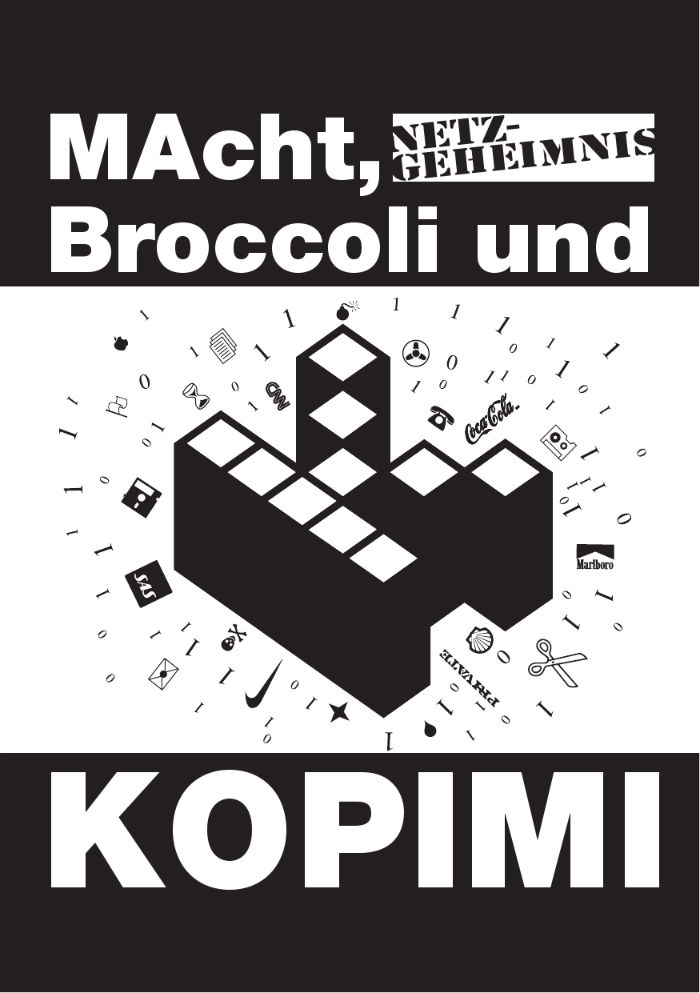

Daonde o nome Micro-Cidades?
Com cidades capitais que possuem meio milhão de habitantes torna-se difícil realizar projetos sociais devido a limitações físicas como a necessidade de trasnporte e também pode ocorrer ruído na transmissão de informações. Portanto visamos contornar estas adversidades construindo pequenas comunidades que em algum ponto da jornada irão se conectar.
O nome "micro-cidade" significa
uma comunidade, um condomínio, um grupo ou um ajuntamento de vizinhos com um propósito em comum e que podem construir soluções através da colaboração. O projeto das micro-cidades pretende fornecer conhecimento e estratégias que facilitem tanto a organização das pessoas como a geração de ativos financeiros que potencialize iniciativas comunitárias.Contamos com o seu apoio e divulgação!
Contra a Geração de Escassez
Jovens que nasceram na era da internet, que no Brasil correspondeu a década de 90 em diante, cresceram em um mundo ilimitado e "gratuito" uma vez que pagando uma parcela mensal de conexão a internet é possível utiliza-la livremente por infinitos minutos. Já que o capitalismo se beneficia da troca e comercialização de bens escassos este limitou as conexões entre vizinhos e proibe até hoje que o sinal do wifi seja compartilhado por outras residências. Está bem no meio do contrato com o seu provedor de acesso, possivelmente em letras miúdas, pode conferir!
Estudando mais um pouco
as leis econômicas percebesse que só é possível acumular capital se forem geradas condições de escasses, pois sem oferta limitada de produto não haverá demanda e portanto não existe mercado. A colaboração visa proporcionar abundância tanto na produção como na distribuição, afinal hoje existe abundância de alimentos devido a avanços tecnológicos futuristas e a má distribuição permite que pessoas passem fome nas periferias.Existe um nome pra política
de se livrar totalmente das amarras de propriedade intelectual, e faz parte de uma ideologia poderosa: Kopimi (Copy Me, ou Copia-me , na língua portuguesa). A Kopimi é simplesmente a rejeição total de qualquer laço que prenda um produto ao seu dono.
Motivações Pessoais
Depois de me formar em Engenharia da Computação e observar o mundo corporativo voltado a oportunistas e não necessariamente a quem busca se aperfeiçoar na área fiquei desiludido com o mundo capitalista. Busquei emprego em diferentes multinacionais e empresas locais que me tratavam como um qualquer, mesmo sendo esforçado me tratavam com desdém pois possuía a credencial de estagiário e mesmo que tivesse ficado varias noites estudando até as 3h da manhã para superar as expectativas de meus superiores, eu descobri que aqueles que pouco se dedicaram eram indicados a cargos que eu desejava.
Andei frustrado
e com poucas expectativas de crescimento, presenciava situações onde o patrão faltava com o respeito comigo e com meus colegas. Em coro me respondiam que era a única empresa que os havia contratado e que precisavam aceitar a humilhação pois o boleto chegaria no fim do mês e era melhor ser maltratado do que não ter o que comer. Por este lado eu entendia mas por outro acreditava que muito do que aceitamos como "natural" ou "comum" foi fabricado por alguém. As cidades são herança das cidades-estados romanas, as fábricas são heranças da revolução industrial inglesa, mais atuais mas ainda assim do século passado.Um século de defasagem
com relação a avanços tecnológicos. Alguns podem pensar "Há, mas temos o Google" mas as empresas funcionam da mesma maneira, com a mesma carga horária, com a mesma hierarquia a mais de cem anos. Keynes, um famoso pesquisador inglês de economia do século XX, previu que até a virada do milênio precisariamos trabalhar apenas 4h por semana devido ao enorme avanço tecnológico e sua eficácia na produção de alimentos se comparada a da sua época. Hoje estamos em 2020 e vemos que a carga horária se mantém a mesma.Ainda bem que temos o Google então,
pelo menos um século tecnológico inteiro não foi desperdiçado. Brincadeiras a parte, deixo aqui a referência do livro "Bulshit Jobs" de David Graeber, que evidência como surgiram certos empregos "falsos" durante os últimos anos, que em nada acrescentam a sociedade mas que nos proporcionam senso de propósito enquanto as pessoas executam alguma tarefa burocrática sem propósito algum.Foi então depois de anos de
pesquisa, estudos científicos, estudo de progrmação, algoritmos e criptografia que obtive um insigth e elaborei este manifesto de empresas colaborativas. Após dezenas de livros teóricos de economia e de pesquisadores matemáticos, que acredito que poucos consigam decifrar mas ainda bem que a matemática complexa aprendida nos tempos do curso de engenharia estava a meu favor.Agradeço a todos estes conhecedores de seu tempo e prometo a todos eles dedicarei meu tempo e conhecimento a construção de empresas distribuidas e benevolentes. com o objetivo de recuperar os empregos perdidos na crise a aumentar a comunicação entre comunidades a muito tempo separadas devido a competição capitalista. Abraço!
"Distribuir conhecimento é um dos meios de se atingir a imortalidade - Dali Lama"